Compressor quang học (opto) kiểu Mỹ, giữ mức âm lượng mà không nghe thấy dấu vết — cho vocal, bass, trống và bus. Bản V4 có giao diện ngang mới, hiển thị động học trực tiếp, đồng hồ stereo và bộ lọc HI CUT.
Giá trị
US$79 → 0 đồng
Hạn
Black Friday 2026 (chưa công bố ngày kết thúc · có thể kết thúc sớm)
Mã
optobf26
Định dạng
VST3 · AU · AAX (Mac / Win)
Kiểm tra tổng tiền là 0 đồng trước khi thanh toán.
※ Ưu đãi có thể kết thúc không báo trước khi nhà phát triển đổi kế hoạch — kiểm tra lại hạn và điều kiện trước khi nhận. Thông tin plugin theo trang chính thức của từng hãng.
🎛️ Thiết bị thu âm & phòng thu
Chia hai mức trước: Cơ bản / Nhập môn dưới ₫20.000.000 và Chuyên nghiệp / Studio từ ₫20.000.000 trở lên, rồi chọn hạng mục bạn cần. 45 mẫu thuộc 12 hạng mục, đều là những mẫu bán chạy lâu năm và có bán tại Việt Nam.
1. Mức
2. Hạng mục
45 thiết bịGiá tham khảo tại Việt Nam · cập nhật 20.11.2026
Cách chọn — Cơ bản / Nhập môn là những gì đủ để bắt đầu làm việc: một audio interface, một tai nghe và một cặp loa nearfield là đủ để phối. Chuyên nghiệp / Studio là những mẫu phòng thu thật sự dùng và trụ được nhiều năm. Giá là mức tham khảo: quy đổi từ giá niêm yết quốc tế (1 US$ ≈ 25.700 ₫, đã tính thuế nhập khẩu và VAT ước tính) và đối chiếu với giá bán lẻ tại một số đại lý Việt Nam (11/2026), nên có thể thấp hơn hoặc cao hơn tùy cửa hàng và khuyến mãi. Loa được tính theo 1 cặp (stereo).
🎧 Tai ngheCơ bản / Nhập môn
MDR-7506 (Sony)
~₫3.290.000
Chuẩn mực của phòng thu phát sóng suốt ba mươi năm. Gấp gọn, âm trung thực, nhét balo thoải mái.
Kín · có dây · 3,5 mm + đầu chuyển 6,3 mm
Link mua hàng sẽ cập nhật sau khi duyệt đối tác
🎧 Tai ngheCơ bản / Nhập môn
ATH-M50x (Audio-Technica)
~₫4.790.000
Chiếc tai nghe kín có mặt trong mọi tấm ảnh phòng thu. Dễ kéo, có sẵn ba dây, thu âm và check mix đều ổn.
Kín · dây rời · kèm 3 dây
Link mua hàng sẽ cập nhật sau khi duyệt đối tác
🎧 Tai ngheCơ bản / Nhập môn
DT 770 PRO (80 Ω) (beyerdynamic)
~₫4.150.000
Đệm velour và cup kín giữ tiếng click không lọt vào bản thu. Bản 80 Ω cắm thẳng vào interface là chạy.
Kín · 80 Ω · đệm velour · dây 3 m
Link mua hàng sẽ cập nhật sau khi duyệt đối tác
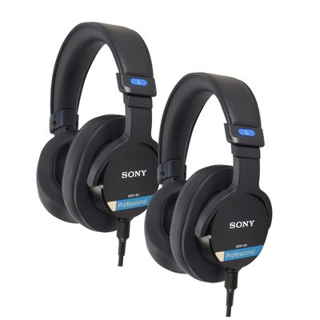
🎧 Tai ngheCơ bản / Nhập môn
MDR-M1 (Sony)
~₫5.850.000
Tai nghe kín hiện đại của Sony: phẳng đủ để ra quyết định, êm đủ cho một ngày mười tiếng.
Kín · dây rời · đầu chuyển 6,3 mm
Link mua hàng sẽ cập nhật sau khi duyệt đối tác
🎧 Tai ngheCơ bản / Nhập môn
HD 600 (Sennheiser)
~₫7.990.000
Chiếc open-back tham chiếu mà bản mix vẫn dịch được. Cần amp tử tế và xứng đáng với nó.
Hở · 300 Ω · dây rời
Link mua hàng sẽ cập nhật sau khi duyệt đối tác
🎧 Tai ngheChuyên nghiệp / Studio
HD 800 S (Sennheiser)
~₫58.500.000
Không gian và chi tiết mức tham chiếu để check master và nghe lâu. Nên có amp riêng.
Hở · 300 Ω · kèm dây balanced
Link mua hàng sẽ cập nhật sau khi duyệt đối tác
🎧 Tai nghe không dâyCơ bản / Nhập môn
WF-1000XM5 (Sony)
~₫5.490.000
Chuẩn mực cho lúc di chuyển: chống ồn mạnh, EQ dùng được, nhỏ đủ bỏ túi giữa hai session.
True wireless · ANC · 8 giờ + hộp
Link mua hàng sẽ cập nhật sau khi duyệt đối tác
🎧 Tai nghe không dâyCơ bản / Nhập môn
MOMENTUM True Wireless 4 (Sennheiser)
~₫6.850.000
Chất âm audiophile trong thân true wireless, có LE Audio và EQ đủ để nghe tham chiếu khi đang đi.
True wireless · ANC · 7,5 giờ + hộp
Link mua hàng sẽ cập nhật sau khi duyệt đối tác
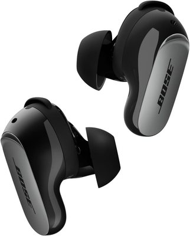
🎧 Tai nghe không dâyCơ bản / Nhập môn
QuietComfort Ultra Earbuds (Bose)
~₫8.250.000
Cách âm tốt nhất và đeo êm nhất, có âm thanh không gian để check mix ở chỗ ồn.
True wireless · ANC · 6 giờ + hộp
Link mua hàng sẽ cập nhật sau khi duyệt đối tác
🎧 Tai nghe có dâyCơ bản / Nhập môn
CHU II (Moondrop)
~₫490.000
Chiếc IEM rẻ nhất còn đáng tin: một driver dynamic sạch, dây rời, không nhấn bass.
In-ear · dynamic 10 mm · 2 pin 0,78 mm
Link mua hàng sẽ cập nhật sau khi duyệt đối tác
🎧 Tai nghe có dâyCơ bản / Nhập môn
SE215 PRO (Shure)
~₫2.700.000
Cách âm kiểu monitor sân khấu, dùng thu âm cũng được. Dây và đầu tai trụ được tour thật.
In-ear · dynamic · MMCX rời · hộp cứng
Link mua hàng sẽ cập nhật sau khi duyệt đối tác
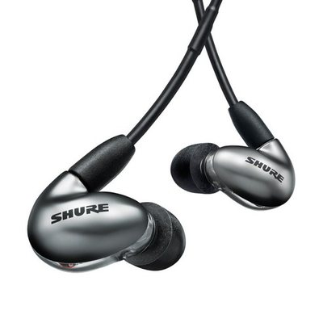
🎧 Tai nghe có dâyChuyên nghiệp / Studio
SE846 Gen 2 (Shure)
~₫20.100.000
Bốn balanced armature và bộ lọc thay được: chiếc IEM tham chiếu mà kỹ sư thật sự mang trong balo.
In-ear · 4 driver · dây rời · 3 bộ lọc
Link mua hàng sẽ cập nhật sau khi duyệt đối tác
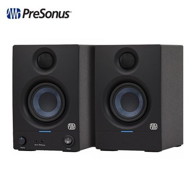
🔊 Loa kiểm âmCơ bản / Nhập môn
Eris 3.5 (1 cặp) (PreSonus)
~₫2.950.000
Cặp loa bàn vừa phòng ngủ: trung thực, có cổng TRS balanced, một cặp giá dễ chịu cho người mới.
Woofer 3,5 inch · 25 W mỗi bên · 1 cặp
Link mua hàng sẽ cập nhật sau khi duyệt đối tác
🔊 Loa kiểm âmCơ bản / Nhập môn
305P MkII (1 cặp) (JBL)
~₫8.400.000
Nearfield 5 inch có hình ảnh rộng hơn giá tiền. Một cặp là đủ cho phòng nhỏ mà low-end vẫn đầy.
Woofer 5 inch · 2 đường tiếng · 1 cặp
Link mua hàng sẽ cập nhật sau khi duyệt đối tác
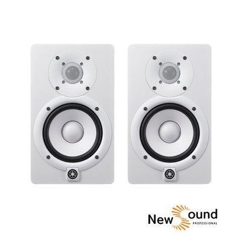
🔊 Loa kiểm âmCơ bản / Nhập môn
HS5 (1 cặp) (Yamaha)
~₫14.300.000
Nearfield nón trắng ai cũng học mix trên đó. Trung thực, không tô hồng, vừa bàn nhỏ.
Woofer 5 inch · active · 1 cặp
Link mua hàng sẽ cập nhật sau khi duyệt đối tác
🔊 Loa kiểm âmCơ bản / Nhập môn
ROKIT 5 G5 (1 cặp) (KRK)
~₫11.800.000
Cổng bass phía trước nên kê sát tường được — câu trả lời cho phòng thu trong căn hộ mà vẫn muốn low-end dày.
Woofer 5 inch · cổng trước · 1 cặp
Link mua hàng sẽ cập nhật sau khi duyệt đối tác
🔊 Loa kiểm âmChuyên nghiệp / Studio
8030C (1 cặp) (Genelec)
~₫41.900.000
Chiếc nearfield vỏ nhôm kinh điển Bắc Âu: trung tính, dễ sống chung, phòng master nào cũng để một cặp bên cạnh.
Woofer 5 inch · vỏ nhôm · bán lẻ từng chiếc
Link mua hàng sẽ cập nhật sau khi duyệt đối tác
🎙️ MicroCơ bản / Nhập môn
SM58-LC (Shure)
~₫2.650.000
Chiếc micro vocal sống sót qua nhiều tour hơn mọi mẫu khác. Dynamic cardioid, chắc như búa.
Dynamic · cardioid · XLR · kèm kẹp
Link mua hàng sẽ cập nhật sau khi duyệt đối tác
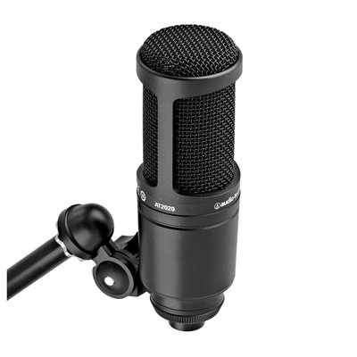
🎙️ MicroCơ bản / Nhập môn
AT2020 (Audio-Technica)
~₫3.500.000
Chiếc condenser đầu tiên đáng mua: êm, trung tính, làm góc phòng có tiêu âm nghe như studio.
Condenser · cardioid · XLR · 20 Hz–20 kHz
Link mua hàng sẽ cập nhật sau khi duyệt đối tác
🎙️ MicroCơ bản / Nhập môn
SM7B (Shure)
~₫16.090.000
Dynamic phát sóng thu được giọng dày trong phòng chưa xử lý âm. Voiceover, podcast và vocal lớn đều ổn.
Dynamic · cardioid · XLR · cần gain 60 dB+
Link mua hàng sẽ cập nhật sau khi duyệt đối tác
🎙️ MicroChuyên nghiệp / Studio
TLM 103 (Neumann)
~₫38.300.000
Micro vocal mặc định ở nhiều phòng thu: chi tiết màng lớn mà không chói, kèm shock mount và hộp gỗ.
Condenser · cardioid · XLR · hộp gỗ
Link mua hàng sẽ cập nhật sau khi duyệt đối tác
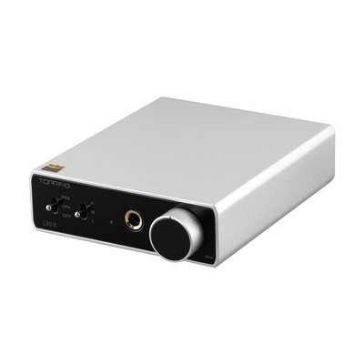
🎛️ Headphone ampCơ bản / Nhập môn
L30 II (Topping)
~₫4.400.000
Khuếch đại NFCA sạch, êm với ba mức gain — đủ cho một chiếc tai nghe tham chiếu 300 Ω.
Ra 4,4 mm / 6,3 mm · vào RCA · 3 mức gain
Link mua hàng sẽ cập nhật sau khi duyệt đối tác
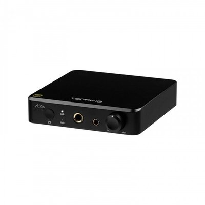
🎛️ Headphone ampCơ bản / Nhập môn
A50s (Topping)
~₫6.450.000
Có ra balanced 4,4 mm và ra preamp, nên cùng một hộp vừa kéo tai nghe vừa nuôi một cặp loa active.
4,4 mm balanced · 6,3 mm · ra preamp
Link mua hàng sẽ cập nhật sau khi duyệt đối tác
🎛️ Headphone ampCơ bản / Nhập môn
A90 Discrete (Topping)
~₫17.700.000
Amp bàn cuối cùng cho planar: 9.800 mW, mạch discrete, có remote nên để xa tầm tay vẫn được.
XLR / 4,4 mm / 6,3 mm · remote · preamp
Link mua hàng sẽ cập nhật sau khi duyệt đối tác
🔌 DACCơ bản / Nhập môn
SU-1 (SMSL)
~₫2.150.000
DAC sạch rẻ nhất mà vẫn đo đúng: AK4493S, USB/quang/coax, không thêm màu.
AK4493S · USB / quang / coax · ra RCA
Link mua hàng sẽ cập nhật sau khi duyệt đối tác
🔌 DACCơ bản / Nhập môn
K11 (FiiO)
~₫3.450.000
DAC và amp trong một hộp nhỏ, có ra 4,4 mm kéo được phần lớn tai nghe studio.
DAC + amp · 4,4 / 6,3 mm · USB / coax / quang
Link mua hàng sẽ cập nhật sau khi duyệt đối tác
🔌 DACCơ bản / Nhập môn
ZEN DAC 3 (iFi)
~₫6.750.000
Chất Burr-Brown ấm với amp tai nghe thật, thêm ra balanced cho loa active.
PCM 768 / DSD512 · 4,4 mm balanced · RCA
Link mua hàng sẽ cập nhật sau khi duyệt đối tác
🔌 DACChuyên nghiệp / Studio
ADI-2 DAC FS (RME)
~₫38.400.000
DAC và amp để nghe kiểm tra, có EQ và dynamics tích hợp — sửa đường cong của tai nghe rồi lưu lại.
DAC 2 kênh · EQ / dynamics · USB · remote
Link mua hàng sẽ cập nhật sau khi duyệt đối tác
🎹 MIDI keyboardCơ bản / Nhập môn
MPK mini IV (Akai Professional)
~₫2.650.000
25 phím và 8 pad MPC nhét vừa balo: sổ phác beat làm ngoài bàn.
25 phím mini · 8 pad · USB-C
Link mua hàng sẽ cập nhật sau khi duyệt đối tác
🎹 MIDI keyboardCơ bản / Nhập môn
KeyLab Essential 61 mk3 (Arturia)
~₫6.750.000
61 phím, fader và encoder map thẳng vào DAW, kèm Analog Lab V để có tiếng ngay.
61 phím · 9 fader · USB / MIDI
Link mua hàng sẽ cập nhật sau khi duyệt đối tác
🎹 MIDI keyboardCơ bản / Nhập môn
Launchkey 61 MK4 (Novation)
~₫9.750.000
61 phím bán nặng với pad aftertouch đa điểm và tích hợp Ableton sát nhất hiện có.
61 phím bán nặng · 16 pad · USB-C
Link mua hàng sẽ cập nhật sau khi duyệt đối tác
🎹 Đàn piano điệnCơ bản / Nhập môn
P-145 (Yamaha)
~₫14.800.000
88 phím có trọng lượng, tiếng CFX dùng được và Bluetooth: cây đàn gọn nằm dưới bàn làm việc.
88 phím · cơ GHS · Bluetooth · 2 × 7 W
Link mua hàng sẽ cập nhật sau khi duyệt đối tác
🎹 Đàn piano điệnCơ bản / Nhập môn
P-225 (Yamaha)
~₫18.600.000
Piano sân khấu mỏng của Yamaha: phím tốt hơn P-145 và nhẹ đủ mang tới session.
88 phím · cơ GHC · Bluetooth · 2 × 7 W
Link mua hàng sẽ cập nhật sau khi duyệt đối tác
🎹 Đàn piano điệnCơ bản / Nhập môn
FP-30X (Roland)
~₫19.900.000
Cơ phím búa PHA-4 có escape, tiếng SuperNATURAL và Bluetooth audio/MIDI. Cây đàn cho phòng học.
88 phím · PHA-4 · Bluetooth audio/MIDI
Link mua hàng sẽ cập nhật sau khi duyệt đối tác
🎹 Đàn piano điệnChuyên nghiệp / Studio
FP-90X (Roland)
~₫68.000.000
Bản portable cao cấp: phím hybrid PHA-50, engine piano mô phỏng và loa đủ cho sân khấu nhỏ.
88 phím · PHA-50 · piano mô phỏng · 2 × 25 W
Link mua hàng sẽ cập nhật sau khi duyệt đối tác
🎚️ Audio interfaceCơ bản / Nhập môn
Scarlett Solo 4th Gen (Focusrite)
~₫4.750.000
Một preamp micro, một cổng nhạc cụ và driver cắm là chạy — interface đầu tiên của người viết bài hát.
1 vào / 2 ra · USB-C · 24-bit/192 kHz
Link mua hàng sẽ cập nhật sau khi duyệt đối tác
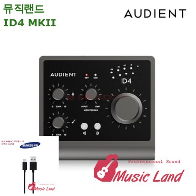
🎚️ Audio interfaceCơ bản / Nhập môn
iD4 MKII (Audient)
~₫5.750.000
Preamp chuẩn console và DI JFET trong hộp hai cổng, có hai ra tai nghe để cùng viết bài.
2 vào / 2 ra · USB-C · 2 ra tai nghe
Link mua hàng sẽ cập nhật sau khi duyệt đối tác
🎚️ Audio interfaceCơ bản / Nhập môn
Scarlett 2i2 4th Gen (Focusrite)
~₫5.890.000
Interface đầu tiên mặc định: hai preamp sạch, auto gain và đủ headroom cho vocal lớn.
2 vào / 2 ra · USB-C · 24-bit/192 kHz
Link mua hàng sẽ cập nhật sau khi duyệt đối tác
🎚️ Audio interfaceChuyên nghiệp / Studio
Babyface Pro FS (RME)
~₫29.500.000
Chuẩn mực về độ ổn định và độ trễ. Cắm phòng cố định hay đi thu đều như nhau; TotalMix không mất khi đổi máy.
12 vào / 12 ra · USB · TotalMix FX
Link mua hàng sẽ cập nhật sau khi duyệt đối tác
💻 Máy tínhCơ bản / Nhập môn
Mac mini M4 (16 GB / 256 GB) (Apple)
~₫18.500.000
Máy tính phòng thu yên nhất trên mỗi đồng: M4, 16 GB bộ nhớ hợp nhất, không nghe quạt khi chạy Pro Tools.
M4 · 16 GB · SSD 256 GB · Thunderbolt 4
Link mua hàng sẽ cập nhật sau khi duyệt đối tác
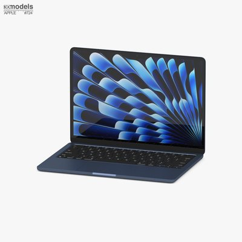
💻 Máy tínhChuyên nghiệp / Studio
MacBook Air 13" M4 (Apple)
~₫24.990.000
Êm, nhẹ và đủ nhanh để thu, mix ngoài studio; chiếc laptop viết bài kiêm rig dự phòng.
M4 · 16 GB · 256 GB · 13,6 inch Liquid Retina
Link mua hàng sẽ cập nhật sau khi duyệt đối tác
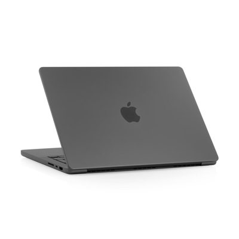
💻 Máy tínhChuyên nghiệp / Studio
MacBook Pro 14" M4 Pro (Apple)
~₫59.500.000
Liquid Retina XDR để chỉnh bằng mắt, quạt vẫn êm trong session dài và chip Pro cho project lớn.
M4 Pro · 24 GB · 512 GB · 14,2 inch XDR
Link mua hàng sẽ cập nhật sau khi duyệt đối tác
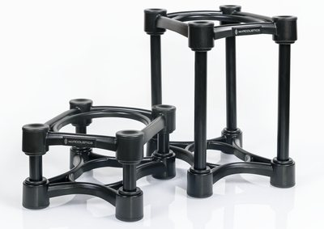
🖥️ Bàn làm việcCơ bản / Nhập môn
Chân đế ISO-155 (IsoAcoustics)
~₫2.700.000
Chỉnh độ nghiêng và độ cao, tách loa khỏi mặt bàn — nâng cấp thật rẻ nhất cho phòng nhỏ.
Chịu 40 lb · 14 vị trí · 1 cặp
Link mua hàng sẽ cập nhật sau khi duyệt đối tác
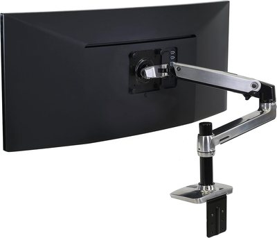
🖥️ Bàn làm việcCơ bản / Nhập môn
Tay treo màn hình LX (Ergotron)
~₫3.990.000
Đưa màn hình lên ngang tầm tai và trả lại mặt bàn cho bàn phím, fader và ly cà phê.
Tới 34 inch / 25 lb · VESA 75/100 · nhôm bóng
Link mua hàng sẽ cập nhật sau khi duyệt đối tác
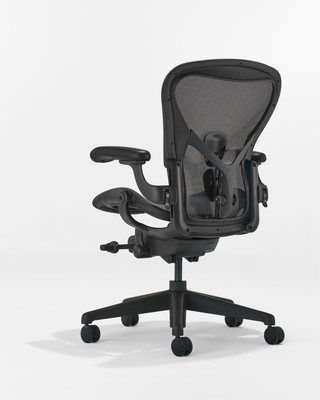
🖥️ Bàn làm việcChuyên nghiệp / Studio
Aeron (cỡ B) (Herman Miller)
~₫26.990.000
Chiếc ghế giúp những ngày mix mười tiếng vẫn làm được; lưới thoáng, PostureFit đỡ lưng dưới.
Cỡ B · PostureFit · lưới · bảo hành 12 năm
Link mua hàng sẽ cập nhật sau khi duyệt đối tác
🔍
Không có thiết bị nào khớp bộ lọc
Thử hạng mục hoặc mức khác.
Về link mua hàng — Hình ảnh và model được tổng hợp từ dữ liệu thiết bị của VSTzip; giá là mức tham khảo. Link mua hàng (Shopee / Lazada / AliExpress) sẽ cập nhật sau khi duyệt đối tác. Khi link liên kết (affiliate) được duyệt và bạn mua qua đó, VSTzip có thể nhận một khoản hoa hồng nhỏ và giá bạn trả không thay đổi. Liên hệ hợp tác: vstzip.official@gmail.com.
Mỗi sáng, plugin miễn phí mới
Đăng ký kênh để xem trong một phút hôm nay nên nhận gì.